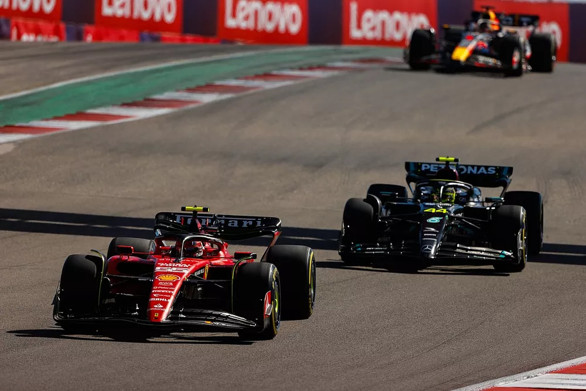

Eski F1 pilotu Vitaly Petrov, Amerika'nın tümsekli yapısından ötürü Ferrari ve Mercedes'in aracı yere yakın ayarlayarak hata ettiğini düşünüyor.
Geçen hafta sonu Amerika'da taban plakasındaki yüksek aşınma nedeniyle Lewis Hamilton ve Charles Leclerc diskalifiye edildi. Tümsekli bir yapıya sahip olan pistte bu iki takım, aracı yere fazla yakın ayarlayarak, taban aşınmasının artmasına neden oldular.
Bu, performans getirmeyi başardı ancak aracın alt kısmı çok aşındığı için, diskalifiye olmalarına neden oldu. SMP Racing'e konuşan Petrov, "Her şeyden önce pistin ne kadar kötüleştiği hakkında konuşmak lazım."
"Çok tümsekli bir yapıya büründü ve bu nedenle iki sürücü aynı anda diskalifiye edildi. Böyle bir şeyin en son ne zaman yaşandığını hatırlamıyorum bile fakat kural kuraldır."
"Aracı bu kadar alçaltmamak gerekiyordu. Yarışın başlangıcında, herkesin zaten sprint ve antrenman seansına katıldığı göz önünde alındığında, prensip olarak takımlar pistin ne kadar engebeli olduğunu görmüşlerdi."
"Araçların neden alçaltıldığı açık; bunu yapmak size daha fazla yere basma gücü veriyor ve aracın virajlarda daha hızlı gitmesini sağlıyor. Herkesin her zaman yapmaya çalıştığı şey aslında budur."
"Eğer yarış başka bir yerde olsaydı - asfaltın daha düzgün olduğu bir yerde - böyle bir şey yaşanmazdı." "Ancak seyirciler bile pilotların kasklarının oradan oraya sallandığını gördü."
"Ben de bu pistte birden fazla kez bulundum ve ilk başta böyle tümsekler yoktu. Ayarlarla çalışmak mümkündü, araç daha yumuşak davranıyordu. Pistin bozulmasının nedenini ben de tam olarak bilmiyorum. Belki de orada ağır araçlar da dahil olmak üzere çok sayıda araç sürüş yapıyordur ya da belki de asfalt dökme teknolojisi yanlıştır."
"Bu bölgede, Teksas'ta, yollar genellikle asfalttan değil, beton plakalardan yapılıyor. Bu, kaldırımın daha uzun ömürlü olması için yapılıyor. Ancak Formula 1 pistinde böyle bir yaklaşımın kullanılamayacağı açık." dedi.